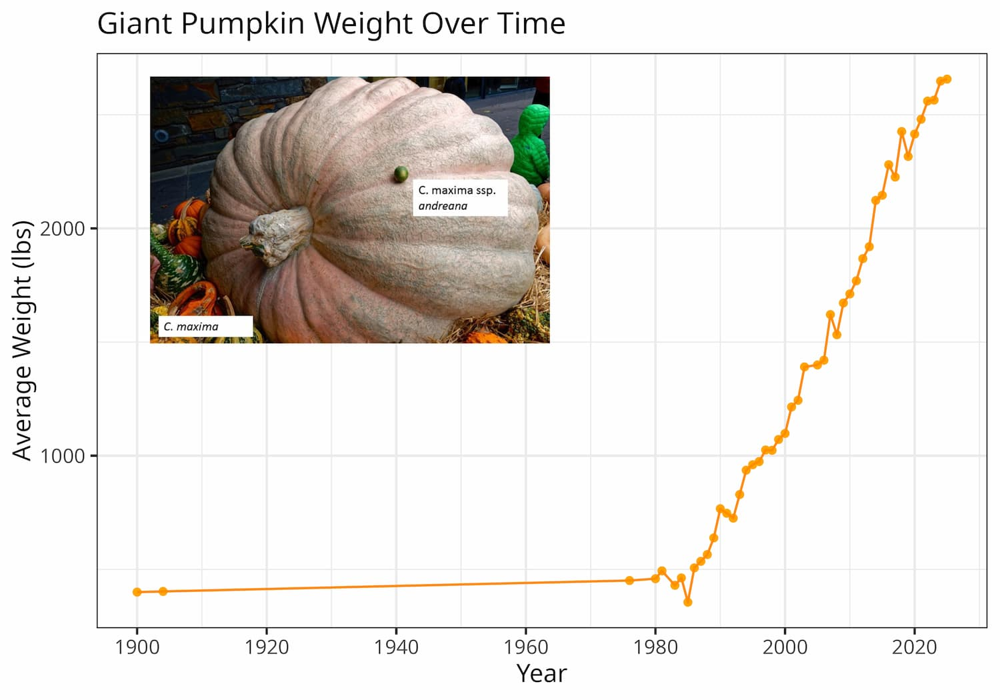
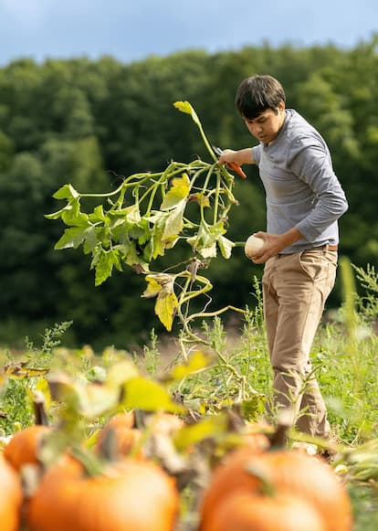
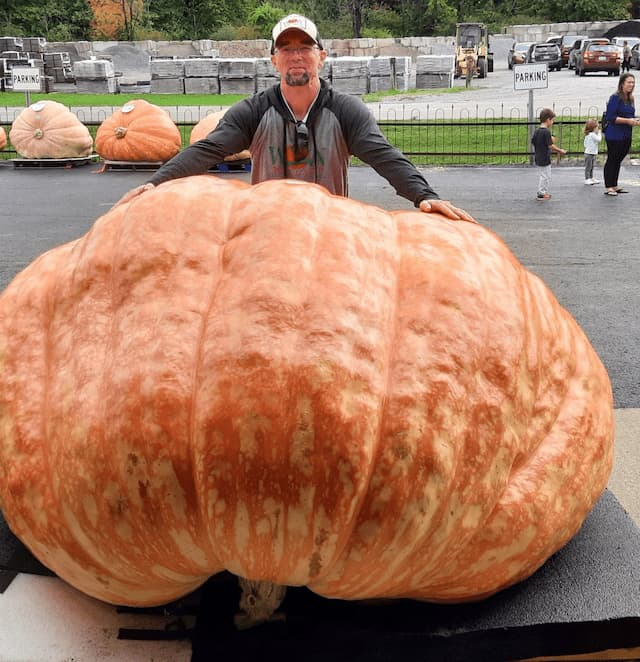
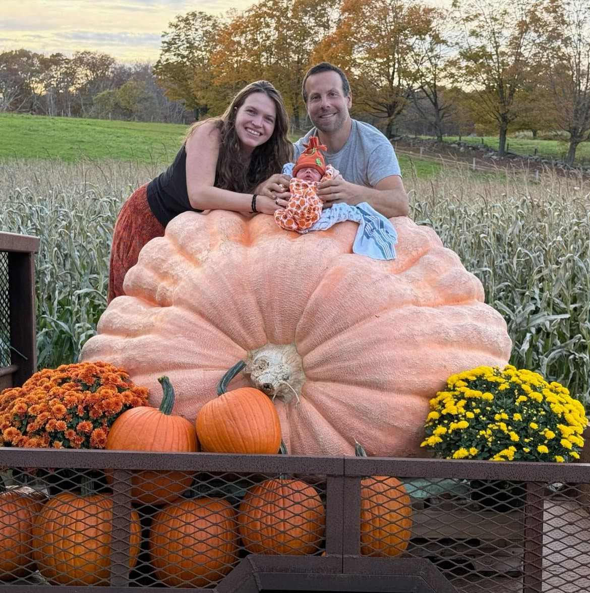

Help sequence the genomes of the world's largest fruit
For decades, giant pumpkin growers have pushed plant breeding to its limits. Some pumpkins now weigh over 2,800 pounds. We're sequencing the genomes of these record-breaking pumpkins to understand the genetics behind the giants.
This research is conducted through the University of New Hampshire Cucurbit Breeding & Genetics Program .
*Progress bar is updated periodically and may not reflect donations in real time.
Support the Project*Donors contributing $500 or more can send a seed of their choice to be sequenced (an AG with known parents), giving them a unique glimpse into their pumpkin’s DNA.
Believing that it is always best to study some special group, I have, after deliberation, taken up domestic pigeons.
Charles Darwin, On the Origin of Species
Scientific insight often comes from unexpected places. Giant pumpkins are extraordinary examples of human-driven evolution through artificial selection. Over the past fifty years, growers have carefully bred and saved seeds from their largest fruits, increasing pumpkin size from a few hundred pounds to well over a metric ton and dramatically altering plant growth traits.
Previous scientific studies have identified genetic differences between large and small-fruited pumpkins, but have not examined diversity within the competitive lineages maintained by giant pumpkin growers.
Unlike studies of ancient domestication, competitive giant pumpkin lineages are exceptionally well documented: pedigrees are recorded and seeds from record-breaking fruits preserved. This creates a rare opportunity to study evolution under strong directional selection. By sequencing the DNA of historic and modern lines from growers, we can track the genetic changes behind the quest to grow the largest fruit on Earth. Standing on the shoulders of these giants, we can also gain insight into the evolutionary process that gave rise to all of our domestic plants and animals.

By sequencing the DNA of historic and modern giant pumpkin lines, we hope to better understand the genetics behind decades of successful selection by growers. In particular, we aim to learn:
Although this project focuses on giant pumpkins, the insights gained will help scientists better understand how selection reshapes genomes and drives the evolution of extreme traits.
Every $100 sequences another pumpkin genome.
Our goal is to sequence at least 96 giant pumpkin genomes. Sequencing will be conducted in collaboration with the UNH Hubbard Center for Genome Studies. The cost per genome is approximately $100, which covers DNA extraction, library preparation, and sequencing. A breakdown is shown below.
| Item | Cost per Sample | Number of Samples | Total Cost |
|---|---|---|---|
| DNA Extraction and Labor | $12.16 | 96 | $1,168 |
| Library Preparation | $42 | 96 | $4,032 |
| Sequencing | $50 | 96 | $4,800 |
| Total | $10,000 | ||

Principal Investigator and Assistant Professor of Plant Breeding leading the University of New Hampshire Cucurbit Breeding & Genetics Program. Chris got interested in genetics through the giant pumpkin hobby.

Andy Wolf has been growing giant pumpkins since 1999 in Little Valley, New York. He has generously shared his expertise and provided historic seeds and guidance to support the One Ton Genome Project.

Alex Noel has been growing giant pumpkins since childhood in Connecticut. A multi-time Topsfield Fair winner and record holder, he has shared his expertise and provided elite genetics in support of the One Ton Genome Project.
*Donors contributing $500 or more can send a seed of their choice to be sequenced (an AG with known parents), giving them a unique glimpse into their pumpkin’s DNA.
Your contribution helps fund DNA sequencing, analysis, and research into the world’s largest pumpkins.
Online: Click the button below to donate online.
By Check: Make your check out to UNH Foundation and mail it to:
UNH Foundation
9 Edgewood Road
Durham, NH 03824
In the memo or note, please write: Cucurbit Breeding Gift Fund (GF000349)